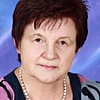

Дошкольное отделение школы № 1329
В 2015 году 34% первоклассников Школы № 1329 пришли из дошкольного отделения.
- Мичуринский проспект, улица Олимпийская Деревня, 8к2
- Мичуринский проспект, улица Олимпийская Деревня, 8к1
- улица Академика Анохина, 12к5
Воспитатели
Воспитатели, которых чаще всего благодарят родители (отзывы и профили сотрудников взяты с официального сайта школы):|
Психолог
Ковалева Светлана Юрьевна
5 благодарностей |
Воспитатель
Федюкова Инна Юрьевна
5 благодарностей |
Воспитатель
Болдырева Светлана Викторовна
4 благодарности |
Воспитатель
Яковлева Наталья Владимировна
3 благодарности |
|
Туркина Наталья Олеговна
2 благодарности |
Муз. рук.
Соловьева Юлия Ивановна
2 благодарности |
Помощник воспитателя
Зайцева Наталья Александровна
2 благодарности |
Воспитатель
Савостьянова Мария Станиславовна
1 благодарность |
|
Воспитатель
Красильщикова Наталья Юрьевна
1 благодарность |
Воспитатель
Ройкина Екатерина Викторовна
1 благодарность |

Воспитатель
Даньшина Валентина Ивановна
1 благодарность |
Фишер Ольга Владимировна
1 благодарность |
|
Воспитатель
Шестакова Марина Анатольевна
1 благодарность |
Воспитатель
Гришина Валентина Федоровна
1 благодарность |
Логопед
Зуева Татьяна Владимировна
1 благодарность |
{kind=link}
{kind=link}
{kind=link}
{kind=link}
{kind=link}
{kind=link}
{kind=link}
{kind=link}
{kind=link}
{kind=link}
{kind=link}
Фотографии взяты с официального сайта школы.
Отзывы
Данные собраны c официального сайта школы и через форму для отзывов.
Хочу выразить огромную благодарность всему коллективу нашего любимого детского сада № 1428, в частности Трухановой Екатерине Владимировне, благодаря которой наш детский садик является образцово-показательным во всех смыслах этого слова. Спасибо Вам за то, что мы-родители и наши дети счастливы находиться в стенах этого прекрасного детского сада. Я считаю, что нам очень повезло, что наш ребенок попал именно в этот садик. Здесь замечательный коллектив воспитателей, педагогов, логопедов.Особенно хочу отметить наших незаменимых воспитателей: Шарапудинову Хайбат Будуновну, Марию Станиславовну, Светлану Викторовну, нашего любимого, самого доброго и терпеливого логопеда Зуеву Татьяну Владимировну и всех других замечательных работников нашего детского сада. Спасибо Вам огромное за Ваш труд, за терпеливое, доброе и справедливое отношение к нашим детям, за заботу, за те знания, что дети приобретают в стенах детского сада именно благодаря Вам, спасибо за те незабываемые праздники и утренники, что Вы проводите для нас и наших детей, спасибо просто за то, что мы спокойны, оставляя самое для нас дорогое в Ваших руках, за Вашу надежность и понимание.
В нашем садике (дошкольное отделение 1) прошел первый весенний утренник!
Спасибо нашим любимым воспитателям группы№9 Наталье Владимировне и Светлане Борисовне, а также Светлане Юрьевне и Юлии Ивановне за прекрасный подарок нам, мамам, к 8 Марта! Получился отличный утренник со стихами, танцами, песнями и играми! Наши малыши даже вальсировали! Я растрогалась :)! Все были такими веселыми! Нас, мам, тоже пригласили потанцевать :) Спасибо за позитив, отличное настроение и атмосферу праздника, которую вам удалось создать!
Спасибо нашим любимым воспитателям группы№9 Наталье Владимировне и Светлане Борисовне, а также Светлане Юрьевне и Юлии Ивановне за прекрасный подарок нам, мамам, к 8 Марта! Получился отличный утренник со стихами, танцами, песнями и играми! Наши малыши даже вальсировали! Я растрогалась :)! Все были такими веселыми! Нас, мам, тоже пригласили потанцевать :) Спасибо за позитив, отличное настроение и атмосферу праздника, которую вам удалось создать!
От всей души хочу поблагодарить Федюкову Инну Юрьевну (Дошкольное отделение 3) за ее работу с нашими детьми!
Педагог с таким уровнем образования и опытом работы большая редкость в детских дошкольных учреждениях. Инна Юрьевна помимо профессиональных навыков обладает душевностью, что немаловажно в ее работе. Дети идут в сад с удовольствием. Кроме этого заметен реальный прогресс в развитии детей. Инна Юрьевна находит подход к каждому, может унять любой утренний каприз ребенка и помочь родителям справиться с "утренним капризулей" (отдельное спасибо от нашего папы ;)
Спасибо большое за Вашу работу, за Вашу душевность, за Ваше понимание!
Педагог с таким уровнем образования и опытом работы большая редкость в детских дошкольных учреждениях. Инна Юрьевна помимо профессиональных навыков обладает душевностью, что немаловажно в ее работе. Дети идут в сад с удовольствием. Кроме этого заметен реальный прогресс в развитии детей. Инна Юрьевна находит подход к каждому, может унять любой утренний каприз ребенка и помочь родителям справиться с "утренним капризулей" (отдельное спасибо от нашего папы ;)
Спасибо большое за Вашу работу, за Вашу душевность, за Ваше понимание!
Моя дочь ходит в садик с апреля 2014 года. Сейчас мы в подготовительной группе. Со сменой места жительства уже ходим в третий садик. Поэтому есть с чем сравнить. И хочу с уверенностью сказать, что это один из лучших садиков в нашем районе. Положительное впечатление создалось сразу после первого общения с директором садика-Екатериной Владимировной. Всегда выслушает и поможет решить появившиеся проблемы. Ребенок очень быстро адаптировался в коллективе благодаря нашим ЛЮБИМЫМ воспитателям – профессиональному и мудрому педагогу Валентине Ивановне , доброй и заботливой- Наталье Владимировне. У моего ребенка непростой характер, поэтому и были проблемы в предыдущем садике. Но здесь воспитатели смогли заинтересовать и увлечь ребенка. Они знают, как утешить, как приободрить, где стоит пожалеть, а где нужно и поругать наше чадо . Видно сколько сил, внимания и чуткости они проявляют к нашим детям. Уровень подготовки к школе - очень высокий. Много занятий. Это и плюс, и небольшой минус, так как совсем мало времени остается для игр. Также хочется поблагодарить Офелию Айказовну - нашу любимую и самую добрую нянечку, которую мы встречали. Когда первый раз зашли в нашу будущую группу, меня поразила чистота и порядок. И это поддерживается постоянно, в какое бы время мы не пришли. Спасибо Ольге Владимировне-учителю физкультуры. Её все дети просто обожают. А любовь детей –это самое главное в детском саду. Очень сильные в этом садике музыкальные работники - Юлия Ивановна и Татьяна Владимировна. Их спектакли - это настоящее профессиональное шоу. И делают они это не для галочки, а вкладывают всю свою душу и мастерство. Иногда видела их на репетиции. Ещё раз хочу поблагодарить руководство и весь педагогический состав детского сада! Именно Вы первые помогаете нашим детям общаться и строить отношения в коллективе, учите дружбе и любви! И теперь, я знаю, что мой ребенок готов к школе. .
Хотелось бы выразить огромную благодарность преподавателям, которые занимаются с нашими детишками в ЦИПРе. Несмотря на то, что все ребятки разные как по возрасту, так и по характеру, они с легкостью находят подход к каждому. Занятия проходят два раза в неделю и длятся около часа. За это время динамические задания сменяются статическими, что очень нравится малышам, и они не успевают устать. В игровой форме их обучают различать цвета, формы, размеры, учат рисовать и лепить, собирать Лего, знакомят с музыкальными инструментами, развивают мелкую моторику, координацию и ловкость. Моему сынишке (ему сейчас 2,6 ), в частности, очень нравится играть на световом столе с песком, он каждый раз ждет этого занятия с нетерпением. Кроме того, что на мой взгляд самое важное, благодаря занятиям детки легче адаптируются к незнакомой обстановке и учатся общаться друг с другом.
Светлана Юрьевна, Ольга Владимировна, Светлана Борисовна, Татьяна Владимировна и Наталия Олеговна! Спасибо Вам огромное за Ваше терпение, искренность, любовь к малышам и профессионализм!
Светлана Юрьевна, Ольга Владимировна, Светлана Борисовна, Татьяна Владимировна и Наталия Олеговна! Спасибо Вам огромное за Ваше терпение, искренность, любовь к малышам и профессионализм!
Наш ребенок посещает дошкольное отделение школы 1329 (логопедическую группу №3). Хочу выразить огромную благодарность всему коллективу детского сада, особенно педагогическому составу группы. Ребенок пришел в сад с довольно сильными нарушениями речи (сына понимала только я, и то на интуитивном уровне ). Но уже через год ребенок прекрасно говорил (нам поставили почти все звуки), через два года запоминал довольно сложные стихотворения, и сейчас я со спокойной душой поведу сына в школу, зная, что он теперь не будет отличатся от здоровых деток. Большое спасибо за этот неоценимый труд прекрасному учителю-логопеду Татьяне Владимировне, замечательным педагогам группы № 3 Волковой Татьяне Степановне, Шарапудиновой Хайбат Будуновне, Гришиной Валентине Федоровне. Педагоги дополнительного образования Фишер Ольга Владимировна, Ковалева Светлана Юрьевна тоже выше всяческих похвал. Еще хотелось бы отметить здоровый психологический климат в группе. Сын раньше ходил в обычный детский сад (25-27 человек в группе) и его настроение и поведение оставляли желать лучшего. После смены детского сада ребенка не узнать. Он стал спокойный, радостный, начал делится своими переживаниями, новостями, новыми знаниями. Думаю, это произошло благодаря тому, что это специализированный детский сад, состоящий из групп по 12 человек, где к каждому ребенку осуществляется индивидуальный подход, где с каждым ребенком возятся до победного результата, не давая поблажек ни себе, ни родителям (мы тоже вовлечены в учебный процесс). А какие замечательные утренники проводят в детском саду, конкурсы чтецов, различные семейно-спортивные мероприятия. Спасибо заведующей детского сада Екатерине Владимировне, за то что в нашем саду пока еще работают логопедические группы, спасибо за подбор высококвалифицированных педагогов и учителей.
Моя дочь Арина пошла в этом году в детский сад 1428, который недавно стал структурным подразделением ГБОУ Школа 1329. Хочу выразить огромную благодарность воспитателям группы №10 "Цыплята" Савостьяновой Марине Станиславовне и Ройкиной Екатерине Викторовне за их трепетное отношение к нашим детям, заботу и любовь. Во многом благодаря их стараниям наша дочь ходит в садик с желанием. Кроме того, хотелось бы выразить огромную благодарность заведующей детским садом Трухановой Екатерине Владимировне за то, что этот садик является настоящим домом для всех детишек, которые приходят в него. Спасибо!
Я очень благодарна всему педагогическому коллективу нашего детского сада #1428 (дошкольное отделение школы #1329). В саду создана очень теплая, спокойная атмосфера. Мы приводим детей сюда и спокойны за то, что их вкусно накормят, с ними и поиграют, и погуляют, и вовлекут в разносторонние развивающие занятия. Огромное спасибо нашим дорогим Наталье Юрьевне, Марине Анатольевне и Вере Ивановне из общеразвивающей группы #6 за ежедневную заботу о наших детках!!!
Поздравляю всех сотрудников садика 1428 с Наступающим Новым Годом!!! Желаю Вам счастья, здоровья и тепла!!! Большое спасибо Вам за чудесный новогодний утренник, который прошел 25 декабря 2014 года в логогруппе "Светлячки". Праздник получился просто волшебным: красивые декорации, костюмы и великолепное исполнение (Хоттабыч, Снеговик, Снегурочка, Дед Мороз)! Очень понравилось, как дети читают стихи. Видно, что все очень старались.Огромное спасибо нашим воспитателям - Хабизат Руслановне, Светлане Викторовне, нашему логопеду - Галине Рафаэловне, и нашей нянечке - Наталье Александровне за Ваш труд! Ребенок ходит в садик с удовольствием! А как ребенок радуется (родители рады еще больше), что ребенок начал выговаривать некоторые буквы. За это еще раз спасибо Галине Рафаэловне!!! Спасибо нашей заведующей Екатерине Владимировне за труд и заботу о наших детях!
Если вы нашли ошибку или неточность, пожалуйста, сообщите нам об этом.
Ученик, выпускник или родитель? Оставьте отзыв о детском саде.